Beim Anlegen eines neuen Werkzeugs steht Ihnen eine Auswahl von Werkzeugtypen zur Verfügung. Der Werkzeugtyp bestimmt, welche Geometrieangaben erforderlich sind und wie diese verrechnet werden.
Sie wechseln in der vertikalen Softkeyleiste zwischen den folgenden Werkzeuggruppen:
Favoriten
Schleifwerkzeuge
Sonderwerkzeuge
Folgende Werkzeuge werden im Fenster "Neues Werkzeug - Favoriten" für Rundschleifen angeboten:
Typ | Bezeichner | Werkzeuglage |
|---|---|---|
400 | Schleifscheibe | 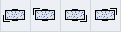 |
490 | Abrichter | 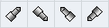 |
494 | Abrichtrolle | 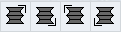 |
496 | Abrichtrad | 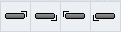 |
710 | 3D-Messtaster | 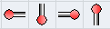 |
Folgende Werkzeuge werden im Fenster "Neues Werkzeug - Favoriten" für Flachschleifen angeboten:
Typ | Bezeichner | Werkzeuglage |
|---|---|---|
410 | Schleifscheibe | |
490 | Abrichter | |
495 | Abrichtrolle | |
497 | Abrichtrad | |
710 | 3D-Messtaster | 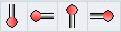 |
Folgende Werkzeuge werden im Fenster "Neues Werkzeug - Schleifwerkzeuge für Rundschleifen angeboten:
Typ | Bezeichner | Werkzeuglage |
|---|---|---|
400 | Schleifscheibe | |
490 | Abrichter | |
494 | Abrichtrolle | |
496 | Abrichtrad |
Folgende Werkzeuge werden im Fenster "Neues Werkzeug - Schleifwerkzeuge" für Flachschleifen angeboten:
Typ | Bezeichner | Werkzeuglage |
|---|---|---|
410 | Schleifscheibe | |
490 | Abrichter | |
495 | Abrichtrolle | |
497 | Abrichtrad |
Folgende Werkzeuge werden im Fenster "Neues Werkzeug - Sonderwerkzeuge" für Flachschleifen angeboten:
Typ | Bezeichner | Werkzeuglage |
|---|---|---|
710 | 3D-Messtaster | |
711 | Kantentaster | 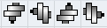 |
712 | Monotaster | 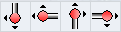 |
713 | L-Taster | 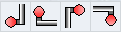 |
714 | Sterntaster | 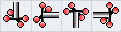 |
725 | Kalibrierwerkzeug | 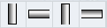 |
Siehe auch:
Werkzeugliste